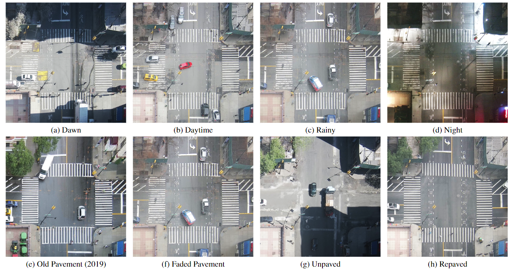
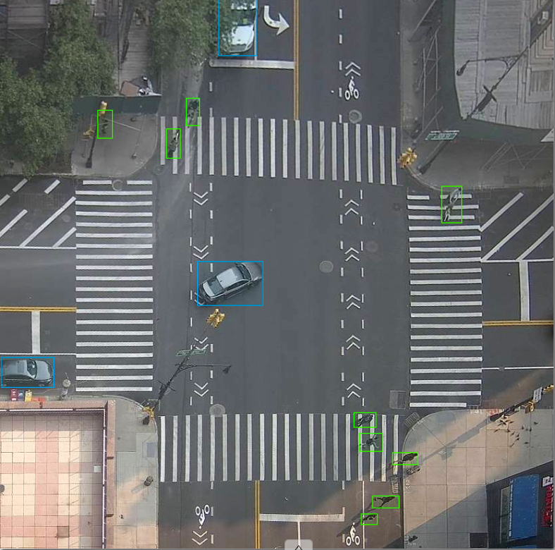
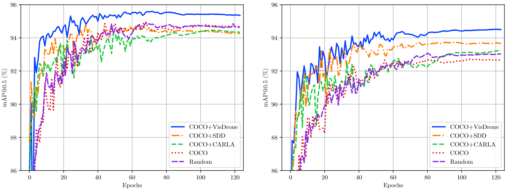

Abstract
As smart cities evolve, privacy-preserving edge processing at traffic intersections has become essential for real-time safety applications while reducing data transmission and centralized computation. High-altitude cameras with on-device inference provide an optimal solution that respects privacy while delivering low-latency results. We introduce Constellation, a dataset of 13K images for research on object detection in dense urban streetscapes from high-elevation cameras across varied temporal conditions. The dataset addresses challenges in small object detection, particularly for pedestrians observed from elevated positions with limited pixel footprints.
Our evaluation of contemporary object detection architectures reveals a 10% lower average precision (AP) for small pedestrians compared to vehicles. Pretraining models on structurally similar datasets increases mean AP by 1.8%. Domain-specific data augmentations and pseudo-labeled data from top-performing models further enhance performance. We evaluate deployment viability on resource-constrained edge devices including Jetson Orin, Raspberry Pi 5, and mobile platforms, demonstrating feasibility of privacy-preserving on-device processing. Comparing models trained on data collected across different time intervals reveals performance drift due to changing intersection conditions.
The best-performing model achieves 92.0% pedestrian AP with 7.08 ms inference time on A100 machines, and 95.4% mAP. The best-performing edge model achieves a similar performance, with Jetson Orin Nano achieving 94.5% mAP and 27.5 ms inference time using TensorRT.
Dataset
Constellation was recorded by a single camera mounted high above a busy intersection in Manhattan, New York City. It contains 13,314 annotated frames drawn from 28 time intervals: 7,350 frames from videos captured in 2019 and 2020, and 5,964 frames from ten scenes recorded in 2023. Every frame is annotated with bounding boxes for two classes, pedestrians and vehicles. The intervals cover dawn, daylight, rain, fog and night, as well as changes to the street itself, from faded markings to an unpaved surface and repaving (Figure 1).
The training and test sets are separated in time, and no interval appears in both. The camera is deliberately installed at an altitude at which pedestrian faces and vehicle license plates cannot be resolved.


| Annotated frames | 13,314 (10,230 train, 3,084 test) |
|---|---|
| Time intervals | 28 (19 train, 9 test) |
| Acquisition | 7,350 frames from 2019–2020, 5,964 from 2023 |
| Classes | Pedestrian, vehicle |
| Test-set boxes | 14,229 pedestrians, 12,399 vehicles |
| Weather stress tests | Heavy rain (964 frames), heavy snow (600) |
| Drift study | 4,731 frames from 2020, 4,716 from 2023 |
| Pseudo-labeled | 50,557 frames (BoxMask) |
| Weather | Train | Test | Total |
|---|---|---|---|
| Overcast | 1,205 | 602 | 1,807 |
| Sunny | 7,355 | 1,282 | 8,637 |
| Night | 1,600 | 450 | 2,050 |
| Sun / sharp shadows | 70 | 150 | 220 |
| Heavy fog | – | 600 | 600 |
| All | 10,230 | 3,084 | 13,314 |
Download
The dataset is released in YOLO format on Hugging Face, with a subset also on Google Drive. Dataset configs and training and evaluation scripts are on GitHub.
License: CC BY-NC-SA 3.0
Benchmarks
We report average precision at an IoU threshold of 0.5 for each class (AP@0.5) and their mean (mAP@0.5) on the Constellation test set, since IoU is highly sensitive to small localization errors on small boxes. Unless noted otherwise, models are trained for 125 epochs from COCO-pretrained weights. All results are reproduced from the paper.
Detector benchmark
Vehicle AP is close to saturation for most architectures, while pedestrian AP varies by more than 25 points. Training at twice the input resolution gives the largest gains on pedestrians, and a YOLOv8x with P2–P6 detection layers is competitive at real-time latencies.
| Model | AP@0.5 | Time (ms) | ||
|---|---|---|---|---|
| Pedestrian | Vehicle | Mean | ||
| YOLOv8 | ||||
| YOLOv8n | 86.1 | 97.8 | 92.0 | 5.4 |
| YOLOv8x | 87.4 | 98.6 | 93.0 | 11.5 |
| YOLOv8n (2x) | 91.2 | 98.5 | 94.8 | 7.2 |
| YOLOv8x (2x) | 91.2 | 98.4 | 94.8 | 43.6 |
| YOLOv8n (2x+SR) | 90.1 | 98.4 | 94.2 | 7.2 |
| YOLOv8x (2x+SR) | 91.3 | 98.7 | 95.0 | 43.6 |
| YOLOv8x (P2) | 89.5 | 98.6 | 94.0 | 15.1 |
| YOLOv8x (P6) | 89.4 | 98.7 | 94.0 | 7.6 |
| YOLOv8x (P2–P6) | 89.9 | 98.7 | 94.3 | 24.5 |
| Other detectors | ||||
| RT-DETR-l | 86.5 | 98.1 | 92.6 | 9.8 |
| RT-DETR-x | 87.3 | 97.8 | 92.3 | 14.5 |
| YOLOv7 | 78.8 | 98.2 | 92.7 | 15.4 |
| CFINet | 82.8 | 95.8 | 89.3 | 31.4 |
| STD | 79.9 | 90.8 | 85.3 | 14.2 |
| LSKNet-S | 64.8 | 90.2 | 77.5 | 31.1 |
| PP-YOLOE+ | 88.5 | 97.7 | 93.1 | 21.6 |
| RTMDet | 87.5 | 98.3 | 92.9 | 24.5 |
Domain gap
Detectors that were not trained on Constellation transfer poorly, particularly for pedestrians. The strongest zero-shot model, SAM3, reaches 64.6 pedestrian AP. YOLOv8x trained on VisDrone reaches 27.3, and trained on CARLA renders of the same camera placement, 20.6, against 87.4 for the same architecture trained on Constellation.
Show as table
| Model | Pedestrian | Vehicle | Mean |
|---|---|---|---|
| Trained on Constellation | |||
| YOLOv8x | 87.4 | 98.6 | 93.0 |
| Open-vocabulary detectors, zero-shot | |||
| SAM3 | 64.6 | 97.8 | 81.2 |
| YOLOv8x-Worldv2 | 60.4 | 85.4 | 72.9 |
| MM Grounding DINO (large) | 56.0 | 86.4 | 71.2 |
| LLMDet | 55.6 | 80.4 | 68.0 |
| YOLOE-v11L | 48.2 | 83.8 | 66.0 |
| Grounding DINO (base) | 43.9 | 68.2 | 56.0 |
| OmDet | 38.6 | 87.4 | 63.0 |
| YOLOv8x trained on another dataset | |||
| COCO | 53.3 | 87.6 | 70.4 |
| OpenImages v7 | 35.9 | 43.0 | 39.4 |
| VisDrone | 27.3 | 88.6 | 57.9 |
| CARLA | 20.6 | 62.9 | 41.8 |
| EuroCity Persons | 19.5 | – | – |
| CityPersons | 11.2 | – | – |
Pretraining and augmentation
Pretraining on VisDrone before fine-tuning gives the best results for both model sizes (Figure 4). Augmentations that mimic the scene help pedestrians most: RandomShadow alone raises pedestrian AP from 87.4 to 90.0, and the full proposed set reaches 90.7. Combined with VisDrone pretraining, YOLOv8x reaches 92.0 pedestrian AP and 95.4 mAP@0.5 (Table 4).

| Pretraining | Pedestrian | Vehicle | Mean |
|---|---|---|---|
| COCO | 90.7 | 98.6 | 94.7 |
| COCO + CARLA | 90.1 | 98.7 | 94.4 |
| COCO + VisDrone | 92.0 | 98.8 | 95.4 |
| COCO + SDD | 90.0 | 98.6 | 94.3 |
| Random initialization | 90.6 | 98.7 | 94.7 |
Robustness to weather and time
Heavy snow and heavy rain are the hardest conditions for the best model, at 73.7 and 82.7 mAP@0.5 (Table 5). Models also drift as the intersection changes: a model trained only on 2020 data loses 7.1 mAP@0.5 on 2023 data, and a model trained only on 2023 data loses 9.6 on 2020 data (Table 6).
| Test set | Frames | Pedestrian | Vehicle | Mean |
|---|---|---|---|---|
| Heavy rain | 964 | 76.0 | 89.4 | 82.7 |
| Heavy snow | 600 | 56.5 | 90.8 | 73.7 |
| Heavy fog | 600 | 93.4 | 99.4 | 96.4 |
| Night | 450 | 81.1 | 99.2 | 90.2 |
| Trained on | Test 2020 | Test 2023 | Test all |
|---|---|---|---|
| 2020 | 96.8 | 89.7 | 92.1 |
| 2023 | 88.7 | 98.3 | 94.8 |
Edge deployment
On a Jetson Orin Nano with TensorRT, YOLOv8n runs in 27.5 ms per frame and YOLOv8x in 111.6 ms. On a Raspberry Pi 5 and an iPhone 13 Pro Max, the nano model is the practical choice (Table 7). With VisDrone pretraining, YOLOv8n reaches 94.5 mAP@0.5.
| Platform | YOLOv8n | YOLOv8x | YOLOv8x (P2–P6) | RT-DETR-x |
|---|---|---|---|---|
| A100 TensorRT | 3.43 ± 0.10 | 7.08 ± 0.07 | 8.83 ± 0.08 | 7.75 ± 0.10 |
| Jetson Orin Nano TensorRT | 27.51 ± 6.20 | 111.55 ± 9.82 | 142.40 ± 12.97 | 120.87 ± 20.15 |
| Rubik Pi 3 LiteRT | 55.10 ± 0.06 | 818.99 ± 5.23 | 1,141.77 ± 1.75 | n/s |
| Raspberry Pi 5 NCNN | 353.15 ± 69.22 | 2,325.67 ± 77.18 | 3,438.64 ± 94.49 | n/s |
| iPhone 13 Pro Max WebAssembly | 372.60 ± 5.10 | 10,233.14 ± 102.33 | OOM | n/s |
Pretrained models
All models below are fine-tuned on Constellation and available as PyTorch weights. The full model directory can also be downloaded at once, and the repository has the training and evaluation scripts used in the paper.
Acknowledgement
This data was collected at the PAWR COSMOS testbed at Columbia University. This work began while the first author was a member of the Department of Electrical Engineering (AIDL Lab) at Columbia University.
Citation
M. K. Turkcan, C. Zang, S. Narasimhan, G. H. Je, B. Yu, M. Ghasemi, J. Ghaderi, G. Zussman and Z. Kostic. Constellation Dataset: Benchmarking High-Altitude Object Detection for an Urban Intersection. International Journal of Computer Vision, 134(10):429, 2026. doi:10.1007/s11263-026-03029-1
@article{turkcan2026constellation,
title={Constellation dataset: Benchmarking high-altitude object detection for an urban intersection},
author={Turkcan, Mehmet Kerem and Zang, Chengbo and Narasimhan, Sanjeev and Je, Gyung Hyun and Yu, Bo and Ghasemi, Mahshid and Ghaderi, Javad and Zussman, Gil and Kostic, Zoran},
journal={International Journal of Computer Vision},
volume={134},
number={10},
pages={429},
year={2026},
publisher={Springer}
}